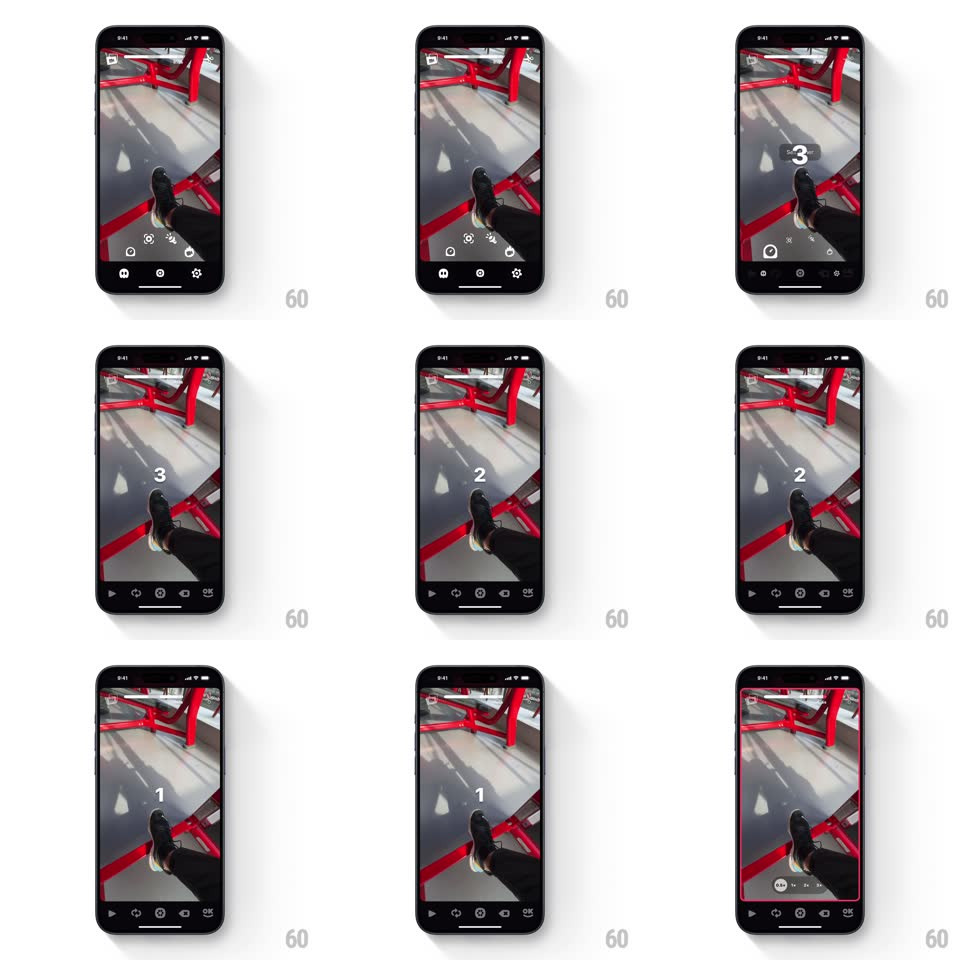

Media
Frame-by-frame

Rebuild this interaction 1:1: OK Video's self-timer - tapping the timer chip row arms a countdown where giant numerals (3, 2, 1) appear center-screen with a depleting circular ring while all controls fade out, then recording starts with a pulsing red border.

Rebuild this interaction 1:1: OK Video's self-timer - tapping the timer chip row arms a countdown where giant numerals (3, 2, 1) appear center-screen with a depleting circular ring while all controls fade out, then recording starts with a pulsing red border.
## Integration
Integration: stack-agnostic spec - springs given as stiffness/damping, timed motions as duration + curve; map every value to your framework and animation library of choice.
## Scene
Full-screen camera viewfinder (gym bench scene). Bottom control bar (play, timer, flip, flash icons); a timer preset row ("1s 3s 5s 10s" chips) appears above it when the timer icon is tapped.
## Motion spec
Pattern: armed countdown with border-pulse recording state.
- Tap a preset: the chip row collapses upward (200ms), the bottom controls and top icons fade out (250ms) leaving a clean viewfinder.
- The countdown: "3" appears at 2x size and settles to 1x (spring ~280/20), a thin circular ring around it depleting clockwise over its 1s; "2" and "1" repeat identically, each replacing the last (150ms crossfade).
- Between numerals the screen flashes the faintest white tick (opacity 0.06, 80ms) - a metronome you feel more than see.
- Recording starts: the viewfinder gains a red border (6px inset stroke) that pulses (opacity 1 -> 0.55 -> 1, 1.2s sine), and the controls fade back in with red accents.
## Calibration
- Numerals are huge (~30% of screen height), white, medium weight - readable across the room.
- The ring depletion is linear, synced exactly to the numeral's second.
## Reduced motion
Numerals crossfade; border stays solid red.
## Don't miss
- Every non-essential control disappears during countdown - the subject is the only UI.
- The red border is the ONLY recording indicator at first - no record button press required after countdown.